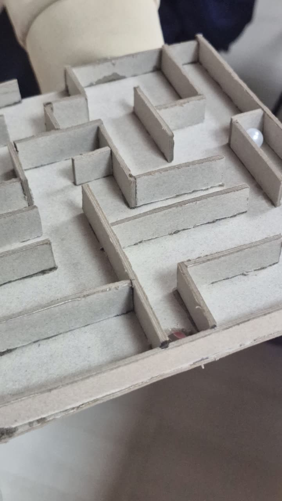
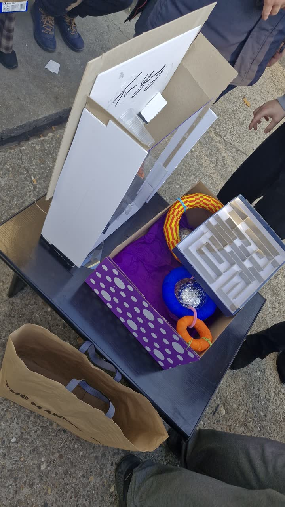

Radovi i primeri / Čas 3
2d lavirint
Aleksa Vasić70/21
Čas 3
2 prikaza rada · Gradivo časa



U rukama korisnika · 06.11.2026.
1 kadar sa posete udruženju · cela poseta ↗
Ravni kartonski lavirint sa trećeg časa ostaje u igri kao najlakši rad za brzu probu iz ruke
ViđenoNa pomoćnom stočiću uz nove prototipe šestog časa stoji i sivi kvadratni „2d lavirint” sa trećeg časa (kadar 11): mala masa i plitak okvir omogućavaju da se uzme jednom rukom bez pripreme.
Sledeća probaObojiti dno putanje svetlim tonom naspram tamnih pregrada kako bi ulaz, izlaz i slepi rukavci bili čitljivi na prvi pogled.


Probali korisnici · 16.10.2026.
Lavirint se drži u krilu obema rukama i naginje; pregrade se prate prstima.